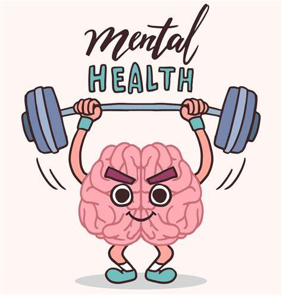

The Impact of Nutritious Foods on Mental Health
In recent years, there has been significant interest in the intricate relationship between nutrition and mental health.
Read More

The Impact of Nutritious Foods on Physical Health
Nutrition indeed plays a critical role in our health and overall well-being. Nutritious foods provide our bodies with essential nutrients such as vitamins, minerals, protein, carbohydrates, and healthy fats that are necessary for various physiological functions.
Read More
Sustainable Agriculture
Sustainable agriculture plays a crucial role in ensuring food security and promoting nutritious diets by adopting practices that balance the needs of present human populations with the imperative to conserve the planet's ability to sustain future generations.
Read More
Nutrient Deficiencies
Nutrient deficiencies can indeed lead to various health issues, impacting different aspects of bodily function and development.
Read More
The Impact of Nutritious Foods on Mental Health
In recent years, the relationships between nutrition and mental health have gained considerable interest.These nutritions have a distinct impact on functioning development mood and energy. It is crucial to the creation and maintenance of cell membrances.and while omega are good fats for your brain.long term consumption of other fats like trans and saturated fats may compromise brain health High-quality foods rich in vitamins, minerals, and antioxidants nourish the brain and protect it from oxidative stress caused by free radicals.According to the American Dietetic Association, people tend to either eat too much or too little when depressed or under stress. Eat too much and you find yourself dealing with sluggishness and weight gain. Eat too little and the resulting exhaustion makes this a hard habit to break. In either case, poor diet during periods of stress and depression only makes matters worse. This cycle is a vicious one, but it can be overcome. To boost your mental health, focus on eating plenty of fruits and vegetables along with foods rich in omega-3 fatty acids, such as salmon. Dark green leafy vegetables in particular are brain protective. Nuts, seeds and legumes, such as beans and lentils, are also excellent brain foods.
The Impact of Nutritious Foods on Physical Health
Nutrition undeniably serves as a cornerstone of our health and overall well-being. Nutrient-dense foods supply our bodies with a diverse array of vital nutrients, including essential vitamins, minerals, proteins, carbohydrates, and healthy fats, which are indispensable for a myriad of physiological processes. Through the provision of essential vitamins, minerals, and antioxidants, nutrient-rich foods fortify our immune system, bolstering its defenses against infections and illnesses. Moreover, adhering to a balanced diet substantially reduces the risk of non-communicable diseases, such as diabetes, cardiovascular ailments, and specific cancers. Additionally, nutritious foods play a pivotal role in regulating appetite, helping to stave off overeating. Fiber-rich foods, in particular, confer a sense of satiety, aiding in weight management and control. Thus, by embracing a diet abundant in nutritious foods, we not only nourish our bodies but also fortify our defenses against disease while promoting overall health and vitality.
Sustainable Agriculture
Sustainable agriculture plays a crucial role in ensuring food security and promoting nutritious diets by adopting practices that balance the needs of present human populations with the imperative to conserve the planet's ability to sustain future generations. Sustainable agriculture encompasses a system of farming that strives to increase agricultural production in a way that doesn't harm the environment. Here's how sustainable agriculture achieves these goals:
(1)Conservation of Natural Resources
(2)Minimization of Environmental Impact
(3)Promotion of Biodiversity
(4)Support for Rural Communities
Nutrient Deficiencies
Nutrient deficiencies indeed have profound effects on health, impacting various bodily functions and systems. Here are some examples of the consequences of deficiencies in specific nutrients
(1)Vitamin A Deficiency: Symptoms may include dry eyes, night blindness, and an increased susceptibility to infections. Vitamin A is crucial for maintaining healthy vision, immune function, and skin integrity.
(2)Zinc Deficiency: Signs of zinc deficiency can manifest as loss of appetite, stunted growth (especially in children), delayed wound healing, hair loss, and diarrhea. Zinc plays essential roles in immune function, growth and development, wound healing, and protein synthesis.
(3)Iron Deficiency: Iron deficiency can lead to impaired brain function, difficulties in regulating body temperature, and gastrointestinal issues such as stomach pain and constipation. Iron is essential for the production of hemoglobin, which carries oxygen in the blood, and for overall energy metabolism.
(4)Iodine Deficiency: Insufficient iodine intake can result in enlarged thyroid glands (known as goiters), decreased production of thyroid hormone, and issues with growth and development, particularly in children and infants. Iodine is vital for the synthesis of thyroid hormones, which regulate metabolism and support normal growth and development.